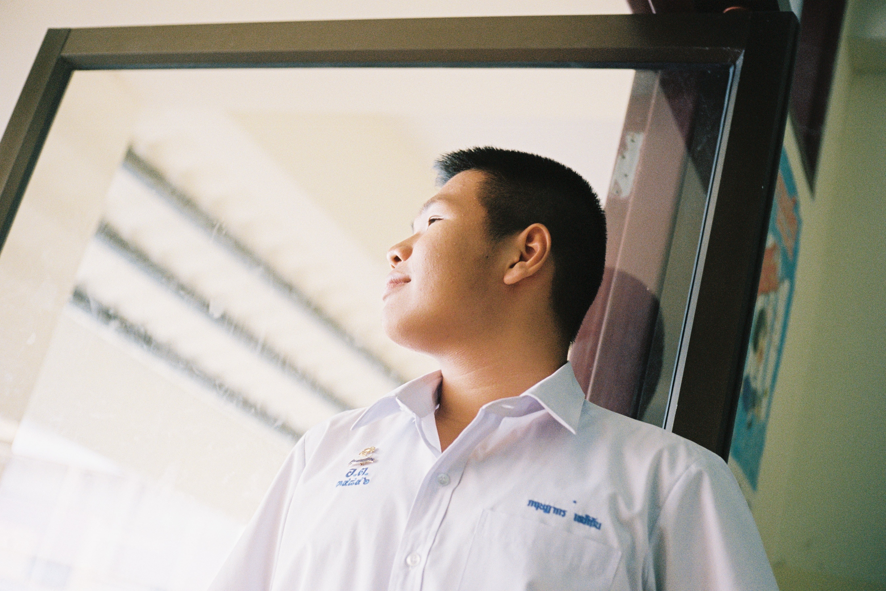
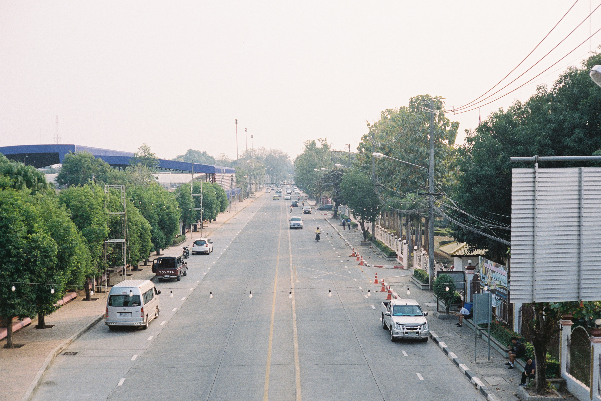
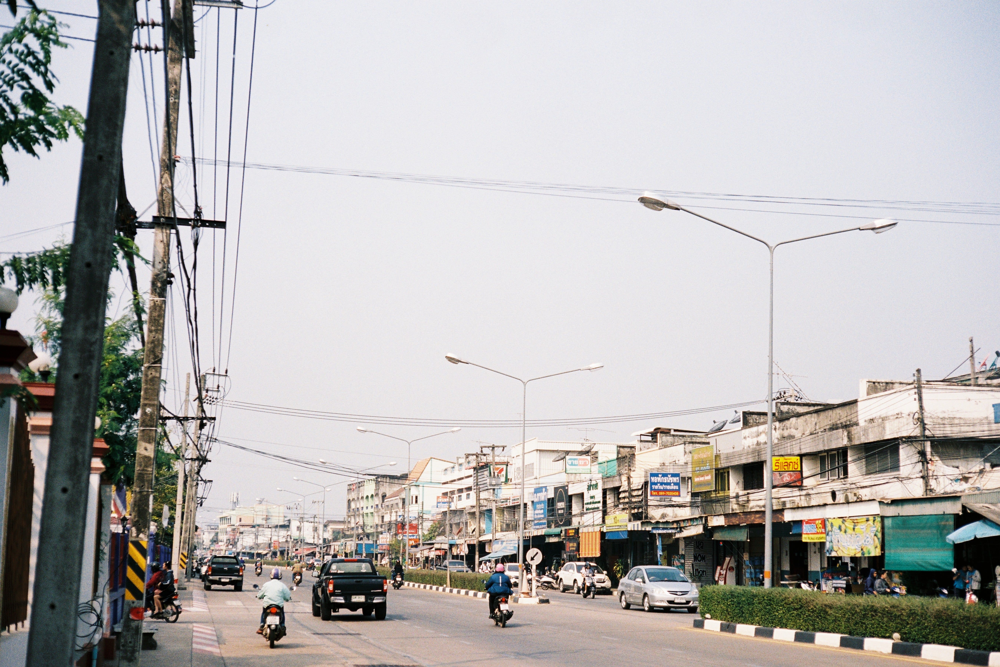

Review - ฟิล์ม Kodak Portra 400
2 min read
ฟิล์มเนกาทีฟเกรดโปร ของทาง Kodak เป็นหนึ่งในฟิล์มที่ผมลองใช้แล้วรู้สึกว่าชอบที่สุดในการถ่าย Portrait หรือการถ่ายภาพบุคคล
งานละเอียดคล้ายกันกับ Kodak Portra 160 ต่างกันที่ ISO มีค่า ISO อยู่ที่ 400 และเป็นฟิล์มที่ให้อารมณ์ของ Skin-Tone ที่สวยมาก จึงเหมาะกับการถ่ายบุคคล
Contrast ของภาพจัด เกรนละเอียด โทนอมฟ้านิดๆ
เหมาะกับแนว : Portrait, Landscape, Street
ราคา : 300-350 บาท (36 รูป เฉลี่ยรูปละประมาณ 10 บาท)
 
